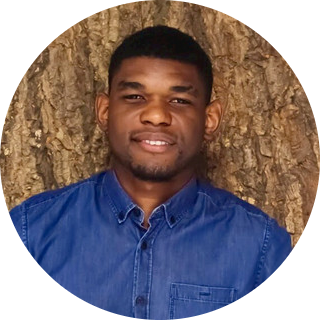
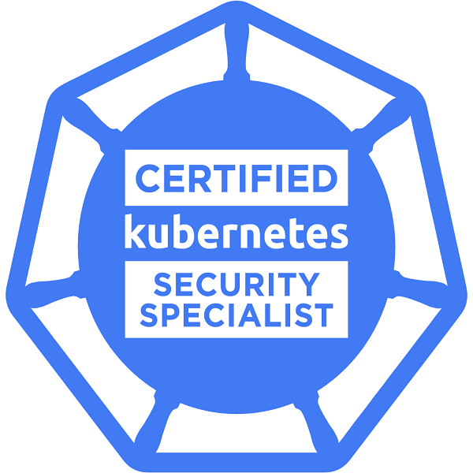
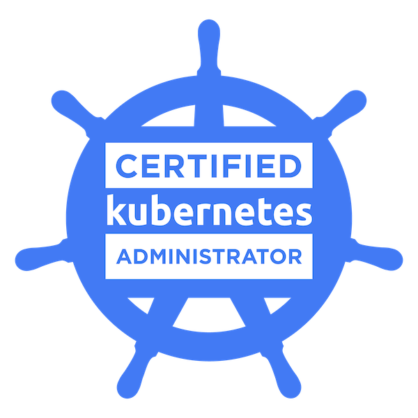
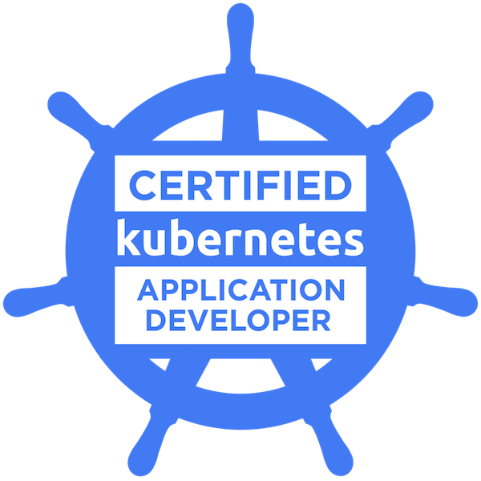
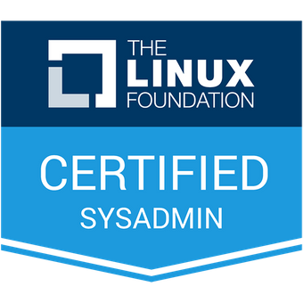

|  |
Franklin MAKONOSite Reliability Engineer Passionné par les nouvelles technologies, j’aime créer, déployer et maintenir des infrastructures modernes |
|
Janv. 2022 – Aujourd’hui |
Site Reliability Engineer BNP Paribas, Paris 20 |
|
Janv. 2021 – Janv.2022 |
CLOUD INFRASTRUCTURE ENGINEER – DEVOPS BNP Paribas, Paris 20 |
|
Juill. 2018 – Janv. 2021 |
Sysadmin - DevOps PublicisSapient (Publicis Groupe), Paris 11 |
|
Mai 2015 – Juill.2018 |
Sysadmin - DevOps Razorfish (Publicis Groupe), Paris 10 |
|
Avril. 2014 – Janv.2015 |
Technicien Rogers Communications, Toronto |
| Cloud Architecture | ★ ★ ★ ★ |
| Méthodologie DevOps & Agile | ★ ★ ★ ★ ★ |
| Automatisation | ★ ★ ★ ★ |
| Gestion de projet technique | ★ ★ ★ ★ ★ |
| Kubernetes | ★ ★ ★ ★ ★ |
| Programmation | ★ ★ |
|  |  |  |  |
E-mail : hello@franklin-makono.fr